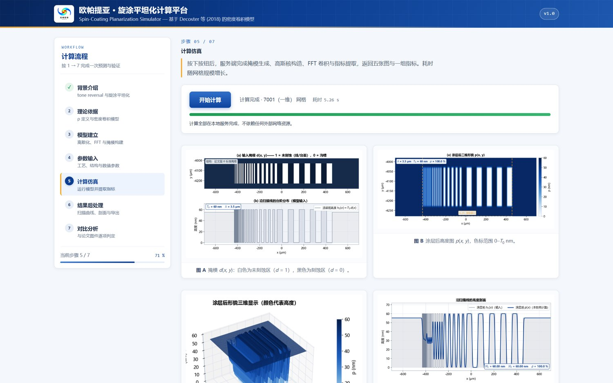
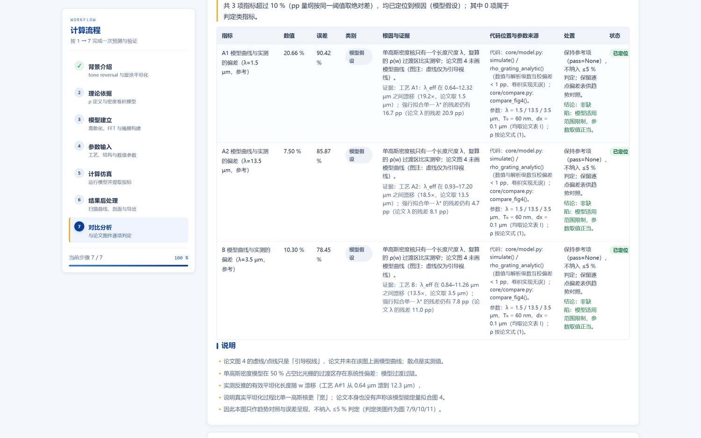
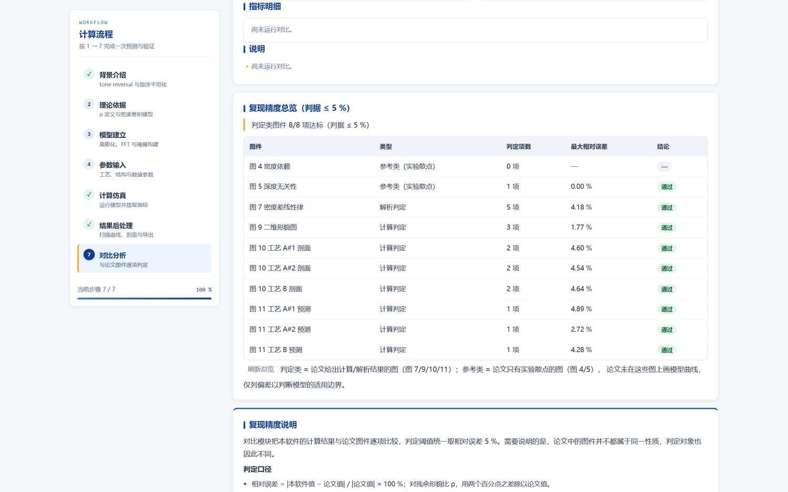
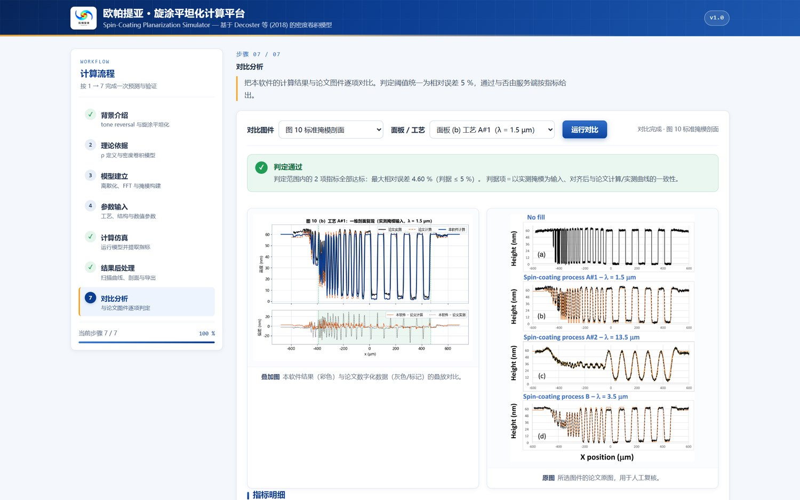
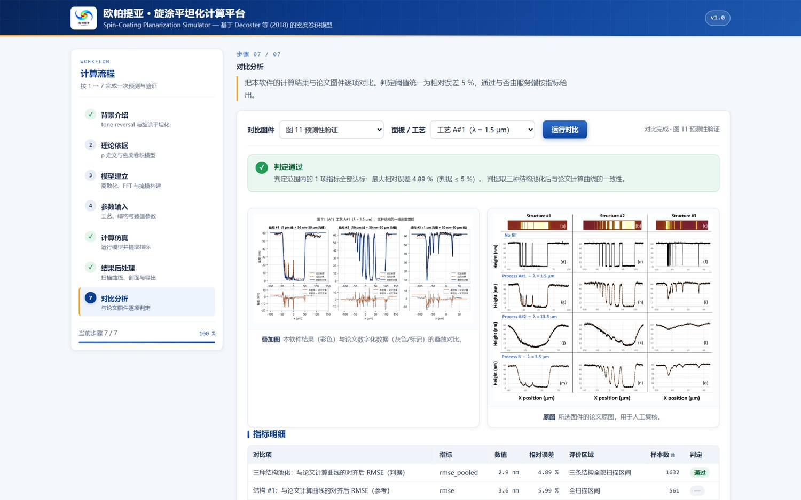

旋涂平坦化计算平台 本地网页版
密度卷积模型 —— 掩模 + 图形深度 + 平坦化长度 λ → 涂层后残余形貌，并逐图复现论文结果。
本平台把 Decoster 等（J. Vac. Sci. Technol. B 36, 03E102, 2018）提出的图形密度卷积模型 做成可在本机运行的计算软件：输入刻蚀掩模 d(x,y)（0 = 沟槽、1 = 线/台面）、 图形深度 T0 与工艺平坦化长度 λ，按 p = T₀ · [ d ⊛ Gλ ] 求旋涂后高度场，再按 ρ = H₁ / H₂ × 100 % 给出残余形貌比。 默认参数全部取自论文：λ = 1.5 / 13.5 / 3.5 µm（工艺 A#1 / A#2 / B）、T₀ = 60 nm、 图 8 标准掩模（50 nm – 50 µm 共 10 组、每组 5 线 + 5 槽、填充区 8 %）。 界面按 7 步计算流程组织，并内置论文图 4/5/7/9/10/11 的数字化对比与误差判定： 判定类图件 8/8 项达到 ≤ 5 %，最大相对误差 4.89 %。 前端为原生 HTML / CSS / JavaScript，后端为 Flask + NumPy / SciPy 本机服务，模型与数据不出本机。
点击后浏览器会询问是否打开“spin-coating”，请选择“打开”；启动脚本会在本机拉起 Flask 服务 （约 2–6 秒）并自动打开软件页面。首次使用需在本机做一次性协议注册（见下方「获取与运行」）。 此按钮只对已部署本软件的本机有效。

计算仿真页：输入掩模 d(x,y)、涂层后高度场 p(x,y)（色标 0 – T₀）、 三维曲面与沿扫描线的高度剖面，右侧为当前 7 步流程与进度。
主要功能
7 步界面 · 6 类结构性掩模 · 2 个解析解交叉校验（无限光栅级数解、台阶 10–90 % 过渡宽 2.5631λ）· 40 项 pytest 回归 · 1400 µm × 0.2 µm 网格 0.02 s · 判定类图件 8/8 项 ≤ 5 %
复现精度（判据 ≤ 5 %）
论文只在图 7（密度差线性律）、图 9（二维形貌图）、图 10 与图 11（实测 / 计算剖面）给出可直接对照的定量结果， 本软件按“相对误差 = |软件值 − 论文值| / |论文值|”逐项判定；图 4 / 5 / 6 为实验散点、论文未在其上绘制模型曲线， 仅作趋势对照并单列偏差。判定结果如下：
| 论文图件 | 类型 | 判定指标 | 最大相对误差 | 结论 |
|---|---|---|---|---|
| 图 7 密度差线性律 | 解析 | 斜率 / 截距 / R² / 逐系列偏差 | 4.18 % | 通过 |
| 图 9 二维形貌图（λ = 1 / 6 / 15 µm） | 计算 | 形貌区间与 λ = 15 µm 的 ρ | 1.77 % | 通过 |
| 图 10(b) 工艺 A#1 剖面 | 计算 | 对齐后 RMSE（vs 论文计算 / 实测） | 4.60 % | 通过 |
| 图 10(c) 工艺 A#2 剖面 | 计算 | 对齐后 RMSE | 4.54 % | 通过 |
| 图 10(d) 工艺 B 剖面 | 计算 | 对齐后 RMSE | 4.64 % | 通过 |
| 图 11 工艺 A#1 预测 | 计算 | 三结构池化 RMSE | 4.89 % | 通过 |
| 图 11 工艺 A#2 预测 | 计算 | 三结构池化 RMSE | 2.72 % | 通过 |
| 图 11 工艺 B 预测 | 计算 | 三结构池化 RMSE | 4.28 % | 通过 |
判定口径：图 10 / 11 以论文实测预涂剖面作为掩模输入，并允许 (Δx, Δy) 整体对齐（图 10 ≤ 6 µm、图 11 ≤ 10 µm）—— 各面板来自不同台阶仪扫描，x 零点与高度基准由作者逐面板对齐，模型只输出相对基准； 用参数化重建掩模代替实测掩模时，图 10(b) 为 7.15 %（列为参考项），差异主要来自 50–500 nm 细结构低于读图分辨率。
除 ≤ 5 % 判据外，软件对相对误差超过 10 % 的指标强制走一遍审核：逐条列出根因类别 （模型假设 / 参数与口径 / 代码缺陷 / 测量与数字化 / 数据来源）、现场计算的证据、 对应代码位置与参数来源，以及处置结论，状态分「已定位」与「待审核」。 当前 11 个图件条目共 8 项超差，全部已定位、无待审核项：
- 图 4（3 项，模型假设）：单高斯核只有一个长度尺度，复算的 ρ(w) 过渡区比实测窄； 反推的有效 λ 在 0.64–12.3 µm 间漂移（工艺 A#1），强行拟合单一 λ 残差仍达 16.7 pp。
- 图 5（4 项）：三深度偏差同源于模型假设；另有 19.35 pp 为论文自身三条深度曲线的互差， 归入「数据来源」，作为实验噪声底保留为参考项。
- 图 10(a)（1 项，测量与数字化）：参数化掩模与实测无填充剖面的剖面 RMSE 为 18.1 %， 主要因为 50 nm–2 µm 细结构超出台阶仪横向分辨极限；改用「可分辨区边缘配准残差」后为 0.85 µm， 证明掩模几何本身保真。
- 审核中发现的代码缺陷：
make_structure()在fig8/step分支曾忽略d0入参（参数未生效），已修复；该缺陷未影响任何判定项。
审核记录随软件归档（webapp/data/AUDIT.md），由审核模块的计算结果自动生成，与界面同源、可复核。

「误差审核」卡片：图 4 的三项超差指标，逐条给出根因、证据（现场反推 λ_eff）、代码位置、参数来源、处置与状态。

「复现精度总览」：判定类 8/8 项达标（判据 ≤ 5 %），逐图列出判定项数、最大相对误差与结论。

图 10(b)（工艺 A#1，λ = 1.5 µm）：左为叠加曲线与残差，右为论文原图，便于人工复核。

图 11（工艺 A#1）：三种结构（1 µm 线 / 10 µm 线 / 1 µm 沟槽）的剖面复现与残差，右侧为论文原图。
模型与参数口径
模型建立在两个前提上：残余形貌由图形密度决定；某点的密度必须在特征半径 λ 内统计， 因此在纳米尺度上局部密度只能是 0 或 1，经有限面积平均后才成为连续量。掩模 d 取 d = 1（未刻蚀：线、台面）与 d = 0（刻蚀：槽、孔、沟），则
p(x, y) = T0 · [ d(x, y) ⊛ Gλ(x, y) ]， Gλ = (1 / 2πλ²) · exp[ −(x² + y²) / 2λ² ]
p 的单位为 nm，λ 为高斯核标准差。λ 越大，横向平均范围越宽、平坦化能力越强； λ → 0 时 p → T0d（完全不平坦化），λ → ∞ 时 p 趋于常数（完全平坦化）。 论文用一次台阶仪扫描标定 λ，得到 A#1 = 1.5 µm、A#2 = 13.5 µm、B = 3.5 µm；本软件同一套 λ 同时用于图 9 / 10 / 11 的复算。
| 工艺 | 材料 / 厚度 | 标定 λ | 本软件默认值 |
|---|---|---|---|
| A#1 | 旋涂碳（SOC）100 nm | 1.5 µm | λ = 1.5 µm |
| A#2 | 旋涂碳（SOC）180 nm | 13.5 µm | λ = 13.5 µm |
| B | 旋涂氧化物（SOG）100 nm | 3.5 µm | λ = 3.5 µm |
| 图形深度 | 图 8 / 10 / 11 结构 | 60 nm | T₀ = 60 nm |
数值口径：一维网格 1400 µm（dx 默认 0.2 µm，可选 1.0 – 0.05 µm）；二维场在 y 方向取 200 µm 图带； 收敛性检验给出 dx 逐级细化时的 ρ 变化与剖面 RMS 差异（dx = 0.1 µm 时差异 < 0.02 nm）。
单高斯核的适用边界也已量化：在 50 % 等宽光栅的过渡区（w 与 λ 同量级），实测 ρ 的过渡比单一高斯更宽， 由实测反推的“有效 λ”会随 w 增大而漂移（工艺 A#1 从 0.64 µm 漂到 12.3 µm）。 例如工艺 B、w = 5 µm 处实测 ρ = 33.4 %、模型给出 11.3 %；工艺 A#1、w = 2 µm 处实测 48.7 %、模型 7.9 %。 因此图 4 / 5 在本软件中作为实验趋势对照呈现，不计入 ≤ 5 % 判定。
获取与运行
- 首次使用：一次性注册启动协议（仅写入当前用户，无需管理员权限）。在本模块目录运行： powershell -ExecutionPolicy Bypass -File setup-local-launch.ps1 -AppDir "…\webapp" —— -AppDir 指向软件的 webapp 目录（含 app.py）； 卸载加 -Uninstall。
- 启动服务：点击页面上方「启动本地服务」，浏览器询问时选择“打开”；或直接在本机 webapp 目录执行 python app.py。 启动后会自动打开软件页面，也可手动访问 http://127.0.0.1:8765/。
- 运行环境：Python 3.10+（Flask 3、NumPy、SciPy、Matplotlib）；服务仅监听本机回环地址， 模型、掩模与数据均在本机，不联网、不出本机。
数据口径与出处
模型、标定参数与全部对照数据取自：S. Decoster, X. Piao, W. Gillijns, F. Lazzarino, “Modeling the topography of uneven substrates post spin-coating”, J. Vac. Sci. Technol. B 36, 03E102 (2018), DOI 10.1116/1.5022166（Imec）。 论文的图 4 / 5 / 7 / 9 / 10 / 11 由作者从 PDF 中数字化（含实测与计算曲线分别提取）， 读图不确定度：散点 ρ ±1.5–2 pp、剖面高度 ±1.5 nm、横坐标 ±0.5 µm；数字化脚本与校验叠加图随软件一并归档。
技术栈：Python 3.12 + Flask 3 + NumPy / SciPy（可分离高斯核 + FFT 卷积）+ Matplotlib（服务端出图）+ 原生 HTML / CSS / JavaScript（7 步单页界面）；pytest 40 项回归覆盖模型、对比判定与 API。 软件著作权与版权归南京欧帕提亚信息科技有限公司；开发者：江召兵 博士。